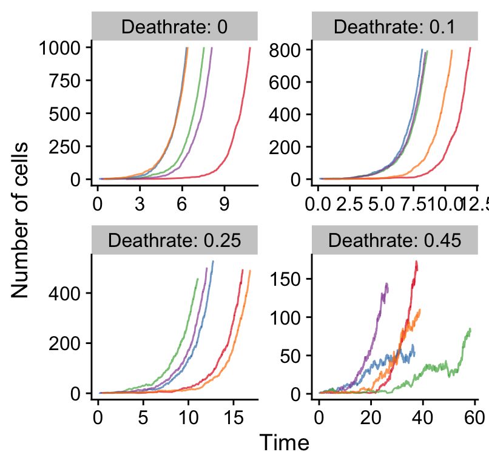

time_series.Rmdlibrary(TEMULATOR)
library(cowplot)
#>
#> ********************************************************
#> Note: As of version 1.0.0, cowplot does not change the
#> default ggplot2 theme anymore. To recover the previous
#> behavior, execute:
#> theme_set(theme_cowplot())
#> ********************************************************
library(ggplot2)
library(dplyr)
#>
#> Attaching package: 'dplyr'
#> The following objects are masked from 'package:stats':
#>
#> filter, lag
#> The following objects are masked from 'package:base':
#>
#> intersect, setdiff, setequal, union
theme_set(theme_cowplot())
# fixed parameters, a neutral tumour:
fixed_clone_params = data.frame(
birthrate = 1,
mutationrate = 0,
start_time = 0,
father = 0
)
# varied parameters:
n_reactions = 1:1000
seeds = 1:5
deathrates = c(0, 0.1, 0.25, 0.45)
# create all simulations:
all_results = NULL
for (dr in deathrates) {
for (s in seeds) {
this_params = fixed_clone_params %>% mutate(deathrate=dr)
sim = new(TEMULATOR_object, this_params, 0, 100, s)
for (n in n_reactions) {
sim$end_time = n
sim$run(FALSE) # play forward, not verbose
result_this_simulation =
data.frame(
reactions=sim$n_reactions,
t=sim$simulation_time,
cells=sum(sim$cell_counts),
seed=s,
dr=dr
)
all_results = rbind(all_results, result_this_simulation)
}
}
}
all_results %>%
ggplot(aes(x=t, y=cells, group=seed, color=as.character(seed))) +
geom_line(alpha=0.7) +
scale_color_brewer(palette="Set1") +
xlab("Time") +
ylab("Number of cells") +
guides(color=FALSE) +
facet_wrap(~paste0("Deathrate: ", dr), ncol=2, scales="free")